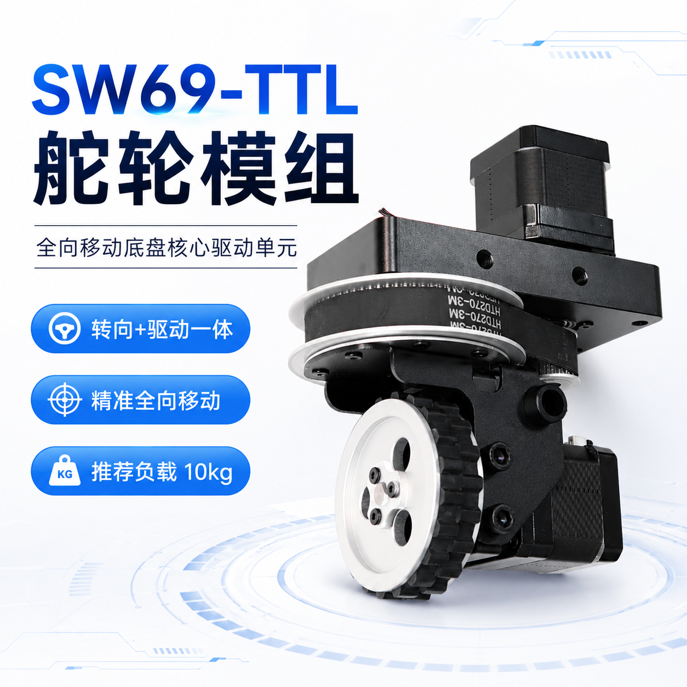
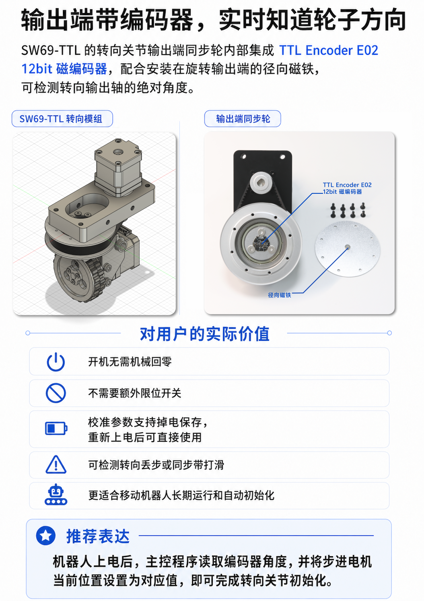
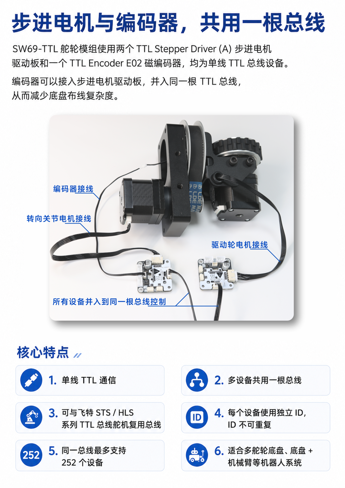
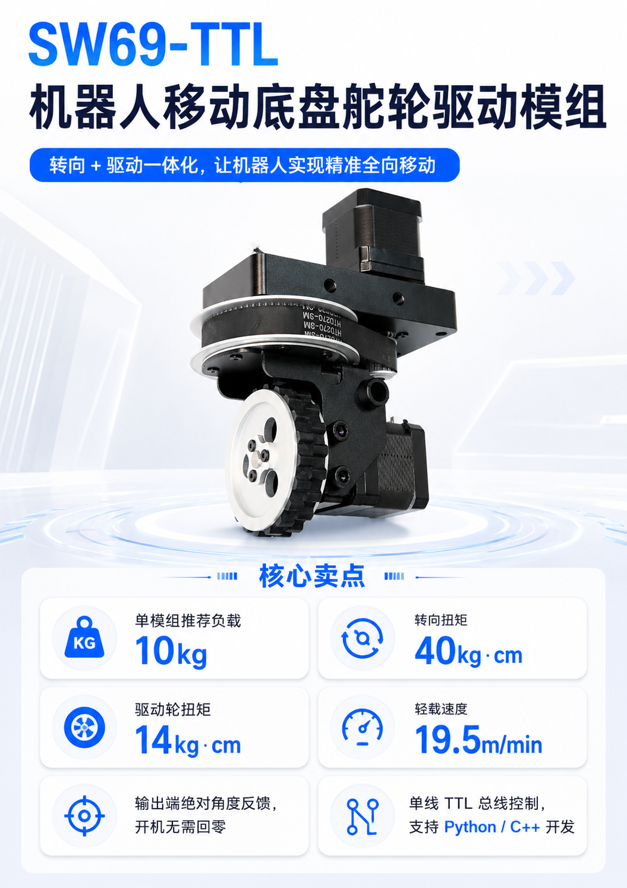

转向与驱动一体
独立控制轮子朝向与滚动速度，为全向移动底盘提供标准执行单元。
Robot swerve drive module
把转向、驱动、角度反馈和总线控制集成为一个标准底盘执行单元。多个模组配合底盘运动算法，可实现前后、左右、斜向移动和原地旋转。
Wiki 链接暂时保留，后续可替换为正式教程与下载地址。

核心优势
SW69-TTL 将两套步进驱动、转向结构、驱动轮和绝对角度反馈整合在一起，减少底盘设计中重复的机械、电气和控制工作。
独立控制轮子朝向与滚动速度，为全向移动底盘提供标准执行单元。
转向输出端集成 TTL Encoder E02，开机即可读取真实轮子方向，无需机械回零。
两个步进驱动板和编码器共用总线，减少线束数量，并支持多模组扩展。
步进驱动方案适合室内移动机器人低速运动，可通过加速度参数实现柔性启停。
支持 Python 与 C++ 开发，可接入 PC、树莓派、Jetson、ESP32 和 STM32 等平台。
提供 STEP、DXF 与尺寸资料，方便底盘安装设计、空间校核和二次开发。
输出端角度反馈
转向关节输出端的同步轮内部集成 E02 12bit 磁编码器，并配合安装在旋转输出端的径向磁铁，直接检测舵轮真实方向。


简化底盘布线
每个模组使用两块 TTL Stepper Driver (A) 和一只 TTL Encoder E02。三台设备设置独立 ID 后接入同一根总线，控制器即可发送转向、驱动和角度读取指令。
技术参数
| 产品型号 | SW69-TTL |
|---|---|
| 外形尺寸 | 172 × 135 × 82mm |
| 重量 | 约 1.6kg |
| 单模组推荐负载 | 10kg |
| 工作电压 | DC 9-25.2V |
| 峰值电流 | 3A |
| 轻载移动速度 | 19.5m/min |
| 转向关节扭矩 | 40kg·cm |
| 驱动轮扭矩 | 14kg·cm |
| 转向 / 驱动轮转速 | 25rpm / 90rpm |
| 驱动轮 | 直径 69mm，宽 15mm，橡胶胎面 |
| 驱动器 | TTL Stepper Driver (A) ×2 |
| 角度编码器 | TTL Encoder E02 ×1 |
| 通信 | 单线 TTL 总线，支持 Python / C++ |
| 安装 | 8 × M6；主要孔距 108 × 40mm |
选型提示
单模组推荐负载为 10kg。多个模组组成底盘时，整机可用负载不能简单按数量相乘，还取决于底盘刚度、重心、加速度、地面条件、轮胎抓地力及安全余量。

资料与开发
Wiki 页面将提供驱动板 ID 配置、舵轮初始化、底盘控制及资料下载入口。